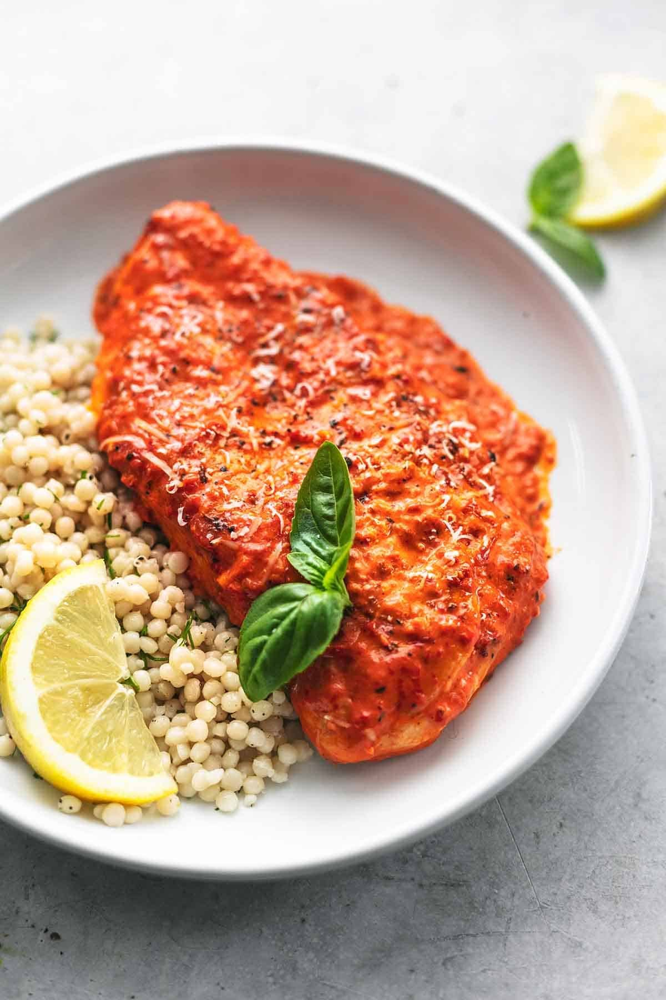

One-Pan Mediterranean Chicken with Roasted Red Pepper Sauce
Ingredients
Instructions
- Preheat the oven to 400°F (200°C).
- In a large oven-safe skillet, heat olive oil over medium-high heat. Season chicken thighs with salt and pepper, then sear them in the skillet until golden brown on both sides, about 5 minutes per side. Remove from skillet and set aside.
- Add chopped red bell pepper and sun-dried tomatoes to the skillet. Sauté for a few minutes until softened.
- Stir in chicken broth, balsamic vinegar, and oregano. Bring to a simmer.
- Return the chicken thighs to the skillet, spooning some of the sauce over the top.
- Transfer the skillet to the oven and bake for 20-25 minutes, or until the chicken is cooked through and the sauce has thickened.
- Garnish with fresh parsley before serving.